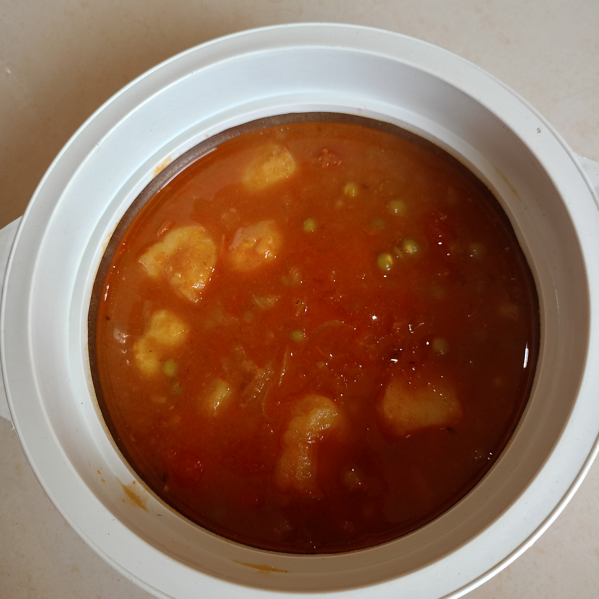
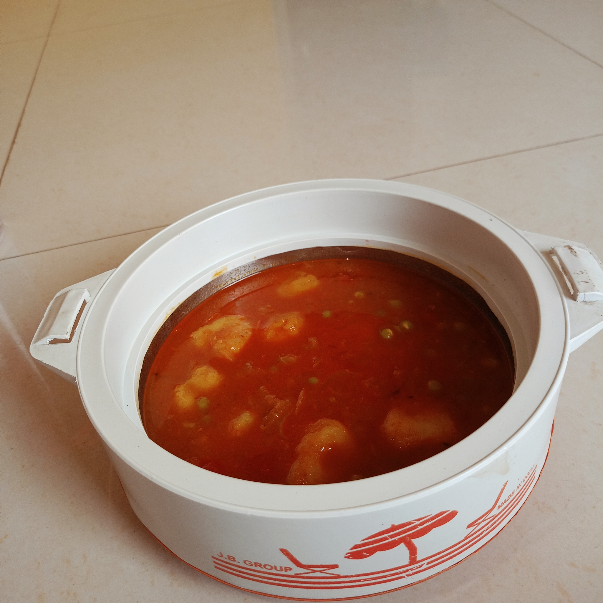
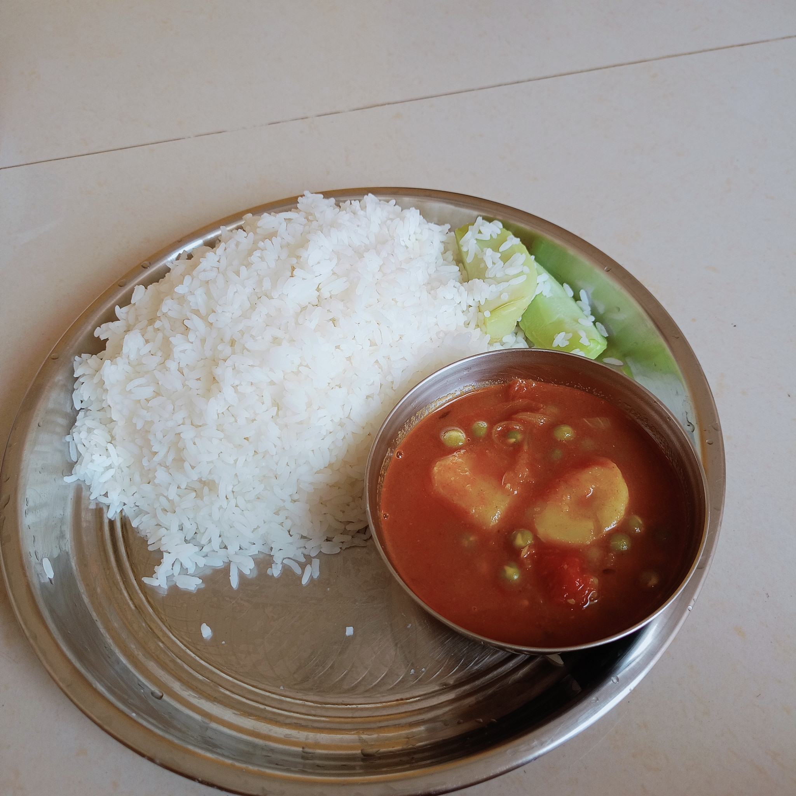

Learn how to make an easy Green Peas Potato Curry with green peas,
potatoes, tomato, ginger, garlic and mustard oil. This simple homemade
Matar Aloo Curry uses light spices and is perfect for a comforting
homemade meal.
About This Green Peas Potato Curry Recipe
This easy Green Peas Potato Curry, also known as Matar Aloo Curry,
is a simple homemade recipe made with green peas, potatoes, tomato,
ginger, garlic and mustard oil. I keep the spices light because
I personally prefer simple food that feels comfortable and easy to enjoy.
This curry also brings back a special memory from my village.
Whenever someone had a birthday, this curry was often served with puri.
I used to watch how it was prepared and slowly learned the process myself.
Now I enjoy making this curry at home and serving it with puri, rice or muri.



Cooking Video
⏱️
Peas Boiling
30 min
🔥
Potatoes Boiling
15 min
🍳
Curry Cooking
30 min
🍽️
Servings
2
📊
Difficulty
Easy
Ingredients
200 g Green Peas
2 normal-size Potatoes
1 spoon Ginger
1 spoon Garlic
1 spoon Cumin Seeds
1 normal-size Onion
½ spoon Turmeric Powder
1 spoon Dry Red Chilli Powder
3 spoons Mustard Oil
Salt to taste
1 Tomato
300 ml Water
Cooking Steps
Boil the green peas for 30 minutes.
Boil the potatoes for 15 minutes.
Heat a kadai and add mustard oil. Add cumin seeds and let them sizzle.
Add the chopped onion and fry lightly.
Add the tomato, ginger-garlic paste, turmeric powder and salt. Cook until the mixture turns brown.
Add the boiled potatoes, followed by the boiled green peas. Fry everything together for 10 minutes.
Add 300 ml water, cover the kadai and cook for 10 minutes.
Remove the lid and cook for another 10 minutes until the curry develops a nice gravy. Serve hot.
Tips for Making Green Peas Potato Curry
Boil the green peas until they are properly cooked before adding them to the curry.
Boil the potatoes separately and avoid overcooking them so they hold their shape in the curry.
Keep the spices light for a simple and comfortable homemade curry.
Cook the onion, tomato and ginger-garlic mixture well before adding the potatoes and peas.
Fry the boiled potatoes and green peas together for a few minutes so they absorb the spices.
Adjust the water according to your preferred gravy consistency and serve hot.
Green Peas Potato Curry FAQ
Can I make this Green Peas Potato Curry at home?
Yes. This is a simple homemade Matar Aloo Curry made with
green peas, potatoes, tomato, ginger, garlic and mustard oil.
How many servings does this recipe make?
This recipe makes approximately 2 servings.
Can I keep the spices light?
Yes. This recipe uses light spices for a simple homemade curry
that is easy to enjoy.
What can I serve with this curry?
You can serve this Green Peas Potato Curry with puri, rice or muri.
It is also a nice option for a homemade meal or office tiffin.
💬 Comments